Мышонок и Карандаш
Владимир Сутеев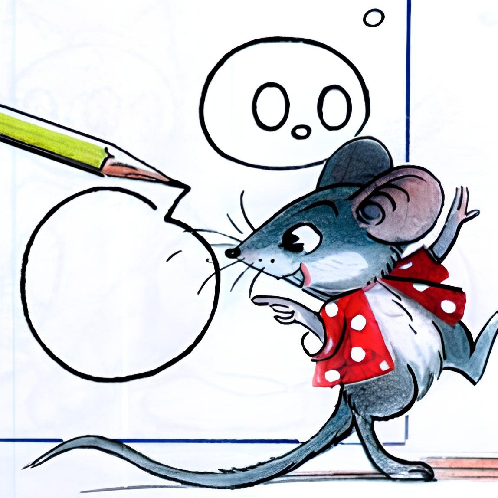
Жил-был на столе у Вовы Карандаш.
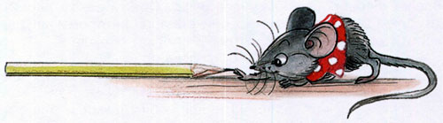
Однажды, когда Вова спал, на стол забрался Мышонок. Увидел Карандаш, схватил и потащил к себе в норку.
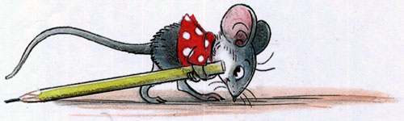
— Отпусти меня, пожалуйста! — взмолился Карандаш. — Ну зачем я тебе нужен? Я деревянный, и меня нельзя есть.
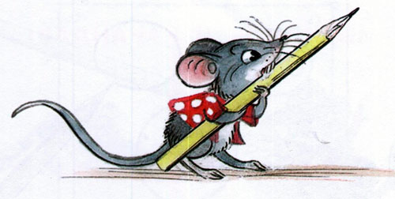
— Я тебя буду грызть! — сказал Мышонок. — У меня чешутся зубы, и я всё время должен что-нибудь грызть. Вот так! — И Мышонок больно укусил Карандаш.
— Ой, — сказал Карандаш. — Тогда дай мне в последний раз что-нибудь нарисовать, а потом делай что хочешь.
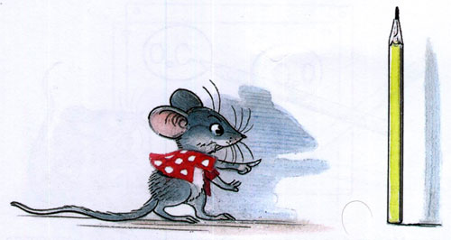
— Так и быть, — согласился Мышонок, — рисуй! Но потом я тебя всё равно изгрызу на мелкие кусочки.
Вздохнул тяжело Карандаш и нарисовал кружок.
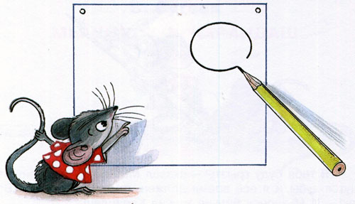
— Это сыр? — спросил Мышонок.
— Может быть, и сыр, — сказал Карандаш и нарисовал ещё три маленьких кружочка.
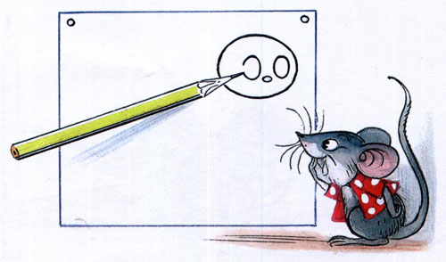
— Ну, конечно, сыр, а это дырочки в нём, — догадался Мышонок.
— Может быть, и дырочки, — согласился Карандаш и нарисовал ещё один большой кружок.
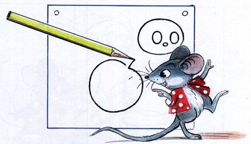
— Это яблоко! — закричал Мышонок.
— Может быть, и яблоко, — сказал Карандаш и нарисовал несколько вот таких длинных кружочков.
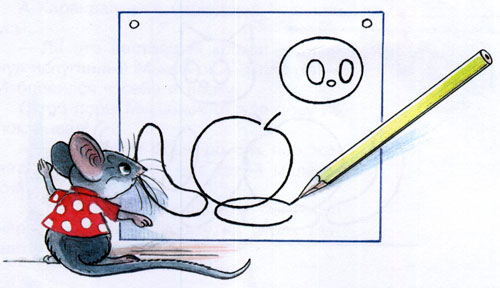
— Я знаю, это сардельки! — закричал, облизываясь, Мышонок, — Ну, кончай скорее, у меня ужасно чешутся зубы.
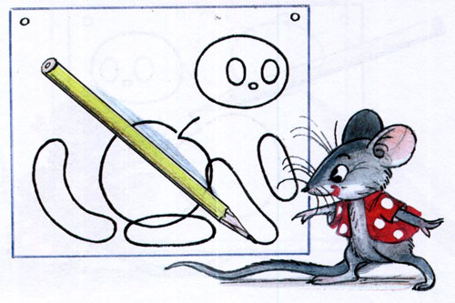
— Подожди минуточку, — сказал Карандаш.
И когда он начал рисовать вот эти уголки, Мышонок закричал:
— Это похоже на ко… Не рисуй больше!
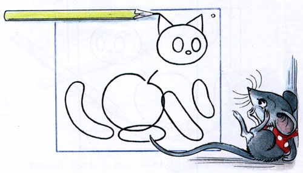
А Карандаш уже нарисовал большие усы…
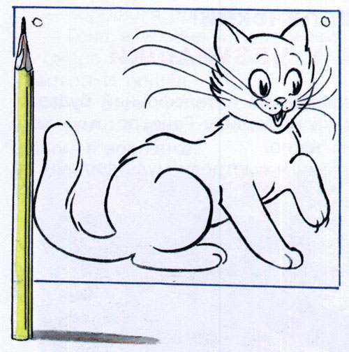
— Да это настоящая кошка! — пискнул испуганный Мышонок. — Спасите! — и бросился к себе в норку.
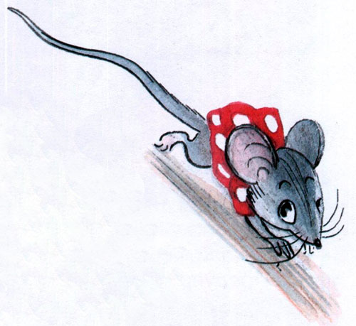
С той поры Мышонок оттуда носу не показывал. А Карандаш у Вовы до сих пор живёт, только он стал вот какой маленький.
И ты своим карандашом попробуй нарисовать такую кошку, на страх мышатам.